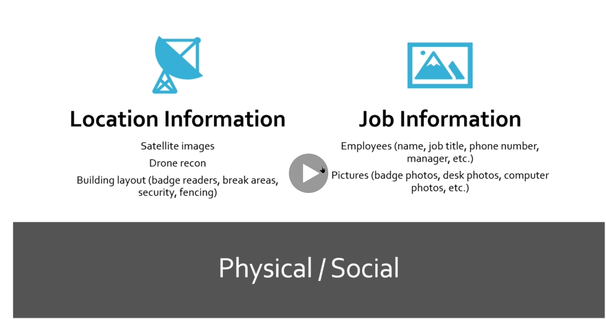

Target Validation: You always have to validate your target. Client may give you wrong ip wrong information or make fat finger so you don't want to attack someone else's website.
Finding Subdomains: we will talk about that
Fingerprinting : we need to know what's running on a web site or what's running on a host? are they running a web server what's that web servers what version is it
Data Breaches : when we're talking about breached incidents from the past that have leaked data.
Nowadays most the time there is not going to be an easy just scan and find something vulnerable and exploit it on the external side of the house